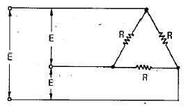
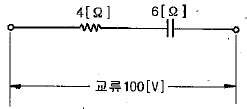
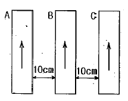
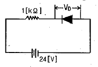
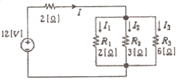
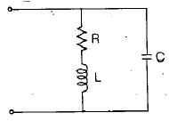
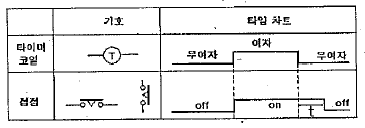
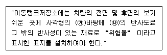

소방설비기사(전기분야) (2012-05-20 기출문제)
1과목: 소방원론
1. 다음 중 발화점이 가장 낮은 것은?
- 황화린
- 적린
- 황린
- 유황
(정답률: 67%)

2. 1kcal 의 열은 몇 Joule 에 해당하는가?
- 5262
- 4186
- 3943
- 3330
(정답률: 70%)
3. 자연발화가 일어나기 쉬운 조건이 아닌 것은?
- 열전도율이 클것
- 적당량의 수분이 존재할 것
- 주위의 온도가 높을 것
- 표면적이 넓을 것
(정답률: 79%)
4. 할론1301의 화학식에 해당하는 것은?
- CF3Br
- CBr2F2r
- CBrClF2
- CBrClF3
(정답률: 88%)
5. 마그네슘의 화재에 주수하였을 때 물과 마그네슘의 반응으로 인하여 생성되는 가스는?
- 일산화탄소
- 이산화탄소
- 수소
- 산소
(정답률: 81%)
6. 0℃ 의 물 1g이 100℃의 수증기가 되려면 몇 cal의 열량이 필요한가?
- 539
- 639
- 719
- 819
(정답률: 53%)
7. 불티가 바람에 날리거나 또는 화재 현장에서 상승하는 열기류 중심에 휩쓸려 원거리 가연물에 직화하는 현상을 무엇이라 하는가?
- 비화
- 전도
- 대류
- 복사
(정답률: 82%)
8. 지하층이라 함은 건축물의 바닥이 지표면 아래에 있는 층으로서 바닥에서 지표면까지의 평균높이가 해당 층높이의 얼마 이상인 것을 말하는가?
- 1/2
- 1/3
- 1/4
- 1/5
(정답률: 70%)
9. 표면온도가 300℃ 에서 안전하게 작동하도록 설계된 히터의 표면온도가 360℃ 로 상승하면 300℃ 때 방출하는 복사열에 비해 약 몇 배의 복사열을 방출하는가?
- 1.2.
- 1.5
- 2
- 2.5
(정답률: 66%)
10. 제3종 분말소화약제의 주성분은?
- 인산암모늄
- 탄산수소칼륨
- 탄산수소나트륨
- 탄산수소칼륨과 요소
(정답률: 83%)
11. 목재 연소 시 일반적으로 발생할 수 있는 연소가스로 가장 관계가 먼 것은?
- 포스겐
- 수증기
- CO2
- CO
(정답률: 71%)
12. 질소79.2%, 산소20.8% 로 이루어진 공기의 평균분자량은? (단. 질소 및 산소의 원자량은 각각 14 및 16이다.)
- 15.44
- 20.21
- 28.33
- 36.00
(정답률: 61%)
13. 주된 연소 형태가 표면연소인 가연물로만 나열된 것은?
- 숯, 목탄
- 석탄, 종이
- 나프탈렌, 파라핀
- 니트로셀룰로오스, 질화면
(정답률: 82%)
14. 이산화탄소를 방출하여 산소농도가 13%되었다면 공기 중 이산화탄소의 농도는 약 몇 % 인가?
- 0.095%
- 0.3809%
- 9.5%
- 38.09%
(정답률: 71%)
15. 건축물의 화재발생시 인간의 피난 특성으로 틀린 것은?
- 평상시 사용하는 출입구나 통로를 사용하는 경향이 있다.
- 화재의 공포감으로 인하여 빛을 피해 어두운 곳으로 몸을 숨기는 경향이 있다
- 화염, 연기에 대한 공포감으로 발화지점의 반대방향으로 이동하는 경향이 있다.
- 화재시 최초로 행동을 개시한 사람을 따라 전체가 움직이는 경향이 있다.
(정답률: 87%)
16. 피난계획의 일반원칙 중 fool proof 원칙이란 무엇인가?
- 1가지가 고장이 나도 다른 수단을 이용하는 원칙
- 2 방향의 피난동선을 항상 확보하는 원칙
- 피난수단을 이동식 시설로 하는 원칙
- 피난수단을 조작이 간편한 원시적 방법으로 하는 원칙
(정답률: 84%)
17. 인화점이 20℃ 인 액체위험물을 보관하는 창고의 인화위험성에 대한 설명 중 옳은 것은?
- 여름철에 창고 안이 더워질수록 인화의 위험성이 커진다.
- 겨울철에 창고 안이 추워질수록 인화의 위험성이 커진다.
- 20℃ 에서 가장 안전하고 20℃ 보다 높아지거나 낮아질수록 인화의 위험성이 커진다.
- 인화의 위험성은 계절의 온도와는 상관없다.
(정답률: 80%)
18. 알칼리금속의 과산화물을 취급할 때 주의사항으로 옳지 않은 것은?
- 충격ㆍ마찰을 피한다.
- 가연물질과의 접촉을 피한다.
- 분진 발생을 방지하기 위해 분무상의 물을 뿌려준다.
- 강한 산성류와의 접촉을 피한다.
(정답률: 77%)
19. 위험물의 유별 성질이 가연성 고체인 위험물은 제 몇 류 위험물인가?
- 제1류 위험물
- 제2류 위험물
- 제3류 위험물
- 제4류 위험물
(정답률: 79%)
20. 할로겐원소에 해당하지 않는 것은?
- 불소
- 염소
- 요오드
- 비소
(정답률: 66%)
2과목: 소방전기회로
21. 저항 R[Ω] 3개를 △결선한 부하에 3상 전압 E[V]를 인가한 경우 선전류는 몇 [A]인가?

- E/3R
- E/√3R
- √3E/R
- 3E/R
(정답률: 50%)
22. 그림과 같은 회로에서 전원의 주파수를 2배로 할 때, 소비전력은 몇 [W]인가?

- 250[W]
- 769[W]
- 816[W]
- 1600[W]
(정답률: 37%)
23. 같은 평면 내에 3개의 도선 A, B, C가 각각 10[cm]의 거리를 두고 있다. 각 도선에 같은 방향으로 같은 전류가 흐를 때 B가 받는 힘에 대한 설명으로 옳은것은?

- A, C가 받는 힘의 2배이다.
- 힘은 없다.
- A, B, C가 똑같은 힘을 받는다.
- A, C가 받는 힘의 1/2 다.
(정답률: 59%)
24. 키르히호프의 법칙을 이용하여 방정식을 세우는 방법으로 옳지 않은 것은?
- 도선의 접속점에서 키르히호프 제1법칙을 적용한다.
- 각 폐회로에서 키르히호프 제2법칙을 적용한다.
- 계산 결과 전류가 +로 표시된 것은 처음에 정한 방향과 반대방향임을 나타낸다.
- 각 회로의 전류를 문자로 나태내고 방향을 가정한다.
(정답률: 71%)
25. 그림과 같은 1[kΩ]의 저항과 실리콘다이오드의 직렬회로에서 양단간의 전압 VD는 약 몇[V]인가?

- 0
- 0.2
- 12
- 24
(정답률: 75%)
26. 그림과 같이 저항 3개가 병렬로 연결된 회로에 흐르는 가지전류 I1, I2, I3는 몇[A]인가?

- I1=2, I2=4/3, I3=2/3
- I1=2/3, I2=4/3, I3=2
- I1=3, I2=2, I3=1
- I1=1, I2=2, I3=3
(정답률: 52%)
27. 발전기나 변압기의 내부회로 보호용으로 가장 적합한 것은?
- 과전류계전기
- 접지계전기
- 비율차동계전기
- 온도계전기
(정답률: 77%)
28. 다음의 제어량에서 추종 제어에 속하지 않는 것은?
- 유량
- 위치
- 방위
- 자세
(정답률: 68%)
29. 피드백 제어계에서 제어요소에 관한 설명 중 옳은 것은?
- 목표값에 비례하는 신호를 발생하는 요소
- 조작부와 검출부로 구성
- 조절부와 검출부로 구성
- 동작신호를 조작량으로 변화시키는 요소
(정답률: 73%)
30. 코일에 전류가 흐를 때 생기는 자력의 세기를 설명한 것 중 옳은 것은?
- 자력의 세기와 전류와는 무관하다.
- 자력의 세기와 전류는 반비례한다.
- 자력의 세기는 전류에 비례한다.
- 자력의 세기는 전류의 2승에 비례한다.
(정답률: 62%)
31. 무효전력 PT=Q 일 때 역률이 0.6 이면 피상전력은?
- 0.6Q
- 0.8Q
- 1.25Q
- 1.67Q
(정답률: 48%)
32. 동일 급속에 온도 구배가 있을 경우 여기에 전류를 흘리면 열을 흡수 또는 발생하는 현상을 무엇이라 하는가?
- 제벡효과
- 톰슨효과
- 펠티에 효과
- 홀 효과
(정답률: 55%)
33. 서미스터는 온도가 증가할 때 그 저항은 어떻게 되는가?
- 감소한다.
- 증가한다.
- 임의로 변화한다.
- 변화 없다.
(정답률: 68%)
34. 절연저항을 측정할 때 사용하는 계기는?
- 전류계
- 전위차계
- 메거
- 휘트스톤브리지
(정답률: 83%)
35. 회로에서 공진상태의 임피던스는 몇 [Ω]인가?

- L/CR
- CR/L
- CL/R
- R/CL
(정답률: 63%)
36. 10+j20[V]의 전압이 16+j9[Ω]의 임피던스에 인가되면 유효전력은 약 몇 [W]인가?
- 6.25[W]
- 17.17[W]
- 23.74[W]
- 31.25[W]
(정답률: 42%)
37. 교류회로에서 8[Ω]의 저항과 6[Ω]의 유도리액턴슥 병렬로 연결되었다면, 역률은?
- 0.4
- 0.5
- 0.6
- 0.8
(정답률: 47%)
38. 다음은 타이머 코일을 사용한 접점과 그의 타임차트를 나타낸다. 이 접점은? (단, t는 타이머의 설정값이다.)

- 한시동작 순시복귀 a접점
- 순시동작 한시복귀 a접점
- 한시동작 순시복귀 b접점
- 순시복귀 한시동작 b접점
(정답률: 62%)
39. 단상교류회로에 연결되어 있는 부하의 역률을 측정하고자 한다. 이 때 필요한 계측기의 구성으로 옳은 것은?
- 전압계, 전력계, 회전계
- 상순계, 전력계, 전류계
- 전압계, 전류계, 전력계
- 전류계, 전압계, 주파수계
(정답률: 82%)
40. 입력신호 A, B가 동시에 “0” 이거나 “1” 일 때만 출력신호 X가 “1” 이 되는 게이트의 명칭은?
- EXCLUSIVE NOR
- EXCLUSIVE OR
- NAND
- AND
(정답률: 51%)
3과목: 소방관계법규
41. 다음 중 그 성질이 자연발화성 물질 및 금수성 물질인 제3류 위험물에 속하지 않는 것은?
- 황린
- 칼륨
- 나트륨
- 황화린
(정답률: 69%)
42. 다음 중 소방시설설치유지 및 안전관리에 관한 법률시행령에서 규정하는 특정소방대상물의 분류가 잘못된 것은?
- 자동차검사장 : 운수시설
- 동ㆍ식물원 : 문화 및 집회시설
- 무도장 및 무도학원 : 위락시설
- 전신전화국 : 방송통신시설
(정답률: 58%)
43. 자동화재 탐지설비의 화재안전기준을 적용하기가 어려운 특정소방대상물로 볼 수 없는 경우는?
- 정수장
- 수영장
- 어류양식용 시설
- 펄프공장의 작업장
(정답률: 66%)
44. 위험물의 제조소 등을 설치하고자 하는 자는 누구의 허가를 받아야 하는가?
- 시ㆍ도지사
- 소방검정공사사장
- 소방본부장 또는 소방서장
- 행정안전부장관
(정답률: 78%)
45. 특정소방대상물의 소방시설 자제점검에 관한 설명 중 종합정밀점검 대상이 아닌 항목은?
- 스프링클러설비가 설치된 연면적 5000[m2]이상인 특정소방대상물
- 옥내소화전설비가 설치된 연면적 5000[m2]이상인 특정소방대상물
- 물분무소화설비가 설치된 연면적 5000[m2]이상인 특정소방대상물
- 스프링클러설비가 설치된 연면적 5000[m2]이상이고 층수가 16층 이상인 아파트
(정답률: 41%)
46. 다음 중 방염대상물품이 아닌 것은?
- 암막 및 무대막
- 전시용합판, 섬유판
- 두께가 2mm 미만인 종이벽지
- 창문에 설치하는 커텐류, 브라인드
(정답률: 81%)
47. 다음(㉮),(㉯)에 들어갈 내용으로 알맞은 것은?

- ㉮ 흑색, ㉯ 황색
- ㉮ 황색, ㉯ 흑색
- ㉮ 백색, ㉯ 적색
- ㉮ 적색, ㉯ 백색
(정답률: 42%)
48. 소방기본법에 따른 소방대상물에 해당되지 않는 것은?
- 건축물
- 항해중인 화물선
- 차량
- 산림
(정답률: 83%)
49. 다음 중 중앙 소방기술 심의위원회의 심의를 받아야 하는 사항으로 옳지 못한 것은?
- 연면적 5만[m2]이상의 특정소방대상물에 설치된 소방시설의 설계ㆍ시공ㆍ감리의 하자여부에 관한 사항
- 화재안전기준에 관한 사항
- 소방시설의 설계 및 공사감리의 방법에 관한 사항
- 소방시설의 구조 및 원리 등에 있어서 공법이 특수한 설계 및 시공에 관한 사항
(정답률: 48%)
50. 다음 중 소화활동설비에 해당하는 것은?
- 옥내소화전설비
- 무선통신보조설비
- 통합감시시설
- 비상방송설비
(정답률: 65%)
51. 층수가 20층인 아파트인 경우 스프링클러 설비를 설치하여야 하는 층수는?
- 6층 이상
- 11층 이상
- 16층 이상
- 전층
(정답률: 77%)
52. 우수품질 인증을 받지 아니한 소방용 기계ㆍ기구 제품에 우수품질 인증표시를 하거나 우수품질 인증표시를 위조 또는 변조하여 사용한 자에 대한 벌칙은?(관련 규정 개정전 문제로 여기서는 기존 정답인 3번을 누르면 정답 처리됩니다. 자세한 내용은 해설을 참고하세요.)
- 100만원 이하의 벌금
- 200만원 이하의 벌금
- 300만원 이하의 벌금
- 500만원 이하의 벌금
(정답률: 69%)
53. 도시의 건물, 밀집지역 등 화재가 발생할 우려가 높아 그로 인한 피해가 클 것으로 예상되는 일정한 구역을 화재경계지구로 지정할 수 있는 사람은?
- 소방서장
- 소방방재청장
- 시ㆍ도지사
- 소방본부장
(정답률: 76%)
54. 소방관계법에서 피난층의 정의를 가장 올바르게 설명한것은?
- 지상 1층을 말한다.
- 2층 이하로 쉽게 피난할 수 있는 층을 말한다.
- 지상으로 통하는 계단이 있는 층을 말한다.
- 곧바로 지상으로 갈 수 있는 출입구가 있는 층을 말한다.
(정답률: 79%)
55. 소방서장은 소방특별조사 결과 소방대상물의 보완될 필요가 있는 경우 관계인에게 개수, 이전, 제거 등의 필요조치를 명할 수 있다. 이와 같이 소방특별조사 결과에 따른 조치명령 위반자에 대한 벌칙사항은?(관련 규정 개정전 문제로 여기서는 기존 정답인 3번을 누르면 정답 처리됩니다. 자세한 내용은 해설을 참고하세요.)
- 100만원 이하의 벌금
- 300만원 이하의 벌금
- 1년 이하의 징역 또는 1000만원 이하의 벌금
- 3년 이하의 징역 또는 1500만원 이하의 벌금
(정답률: 62%)
56. 비상경보설비를 설치하여야 할 특정소방대상물이 아닌 것은?
- 지하가 중 터널로서 길이가 500m 이상인 것
- 사람이 거주하고 있는 연면적 400m2 이상인 건축물
- 지하층의 바닥면적이 100m2 이상으로 공연장인 건축물
- 35명이 근로자가 작업하는 옥내작업장
(정답률: 74%)
57. 위험물시설의 설치 및 변경, 안전관리에 대한 설명으로 옳지 않은 것은?
- 제조소 등의 용도를 폐지한 때에는 폐지한 날부터 30일이내에 시ㆍ도지사에게 신고하여야 한다.
- 제조소 등의 설치자의 지위를 승계한 자는 승계한 날부터 30일 이내에 시ㆍ도지사에게 신고하여야 한다.
- 위험물안전관리자가 퇴직한 때에는 퇴직한 날부터 30일 이내에 다시 위험물안전관리자를 선임하여야 한다.
- 위험물안전관리자를 선임한 때에는 선임한 날부터 14일 이내에 소방본부장 또는 소방서장에게 신고하여야 한다.
(정답률: 52%)
58. 소방기관이 소방업무를 수행하는데 필요한 인력과 장비등에 관한 기준은 다음 중 어느 것으로 정하는가?(관련 규정 개정전 문제로 정답은 2번 이었습니다. 자세한 내용은 해설을 참고하세요.)
- 대통령령
- 행정안전부령
- 시ㆍ도의 조례
- 소방방재청장령
(정답률: 67%)
59. 하자보수를 하여야 하는 소방시설과 소방시설별 하자보수 보증기간이 알맞은 것은?
- 비상경보설비 : 3년
- 옥내소화전설비 : 2년
- 스프링클러설비 : 3년
- 자동화재탐지설비 : 2년
(정답률: 65%)
60. 다음 중 특수가연물의 종류에 해당하지 않는 것은?
- 목탄류
- 석유류
- 면화류
- 볏집류
(정답률: 62%)
4과목: 소방전기시설의 구조 및 원리
61. 거실이 4개인 특정소방대상물에 단독경보형 감지기를 설치하려고 한다. 거실의 면적은 각각 A실 28[m2], B실 310[m2], C실 35[m2], D실 155[m2]이다. 단독경보형 감지기는 몇 개 이상 설치하여야 하는가?
- 4개
- 5개
- 6개
- 7개
(정답률: 55%)
62. 지하철역사에 설치되는 피난구유도등의 종류로 옳은 것은?
- 특형피난구유도등
- 대형피난구유도등
- 중형피난구유도등
- 소형피난구유도등
(정답률: 70%)
63. 비상콘센트를 다음과 같은 조건으로 현장 설치한 경우 화재안전기준과 맞지 않는 것은?
- 바닥으로부터 높이 1.45[m]에 움직이지 않게 고정시켜 설치된 경우
- 바닥 면적이 800[m2]인 층의 계단 출입구에서 4[m]이내에 설치된 경우
- 바닥 면적의 합계가 12000[m2]인 지하상가의 수평거리 30[m]마다 추가 설치한 경우
- 바닥면적의 합계가 2500[m2]인 지하층의 수평거리 40[m]마다 추가로 설치된 경우
(정답률: 42%)
64. 휴대용 비상조명등을 설치한 경우이다. 화재안전기준에 적합하지 않는 경우는?
- 다중이용업소의 객실마다 잘 보이는 곳에 1개 이상 설치하였다.
- 백화점에 보행거리 50m이내마다 5개씩 설치되었다.
- 지하상가에 보행거리 25m이내마다 4개씩 설치되었다.
- 지하역사에 보행거리 50m이내마다 3개씪 설치하였다.
(정답률: 59%)
65. 비상콘센트의 풀박스 등은 두께 몇 [mm]이상의 철판을 사용 하여야 하는가?
- 1.2[mm]
- 1.6[mm]
- 2.6[mm]
- 3.2[mm]
(정답률: 78%)
66. 감지기의 설치기준으로 부적당한 것은?
- 감지기(차동식분포형 제외)는 실내 공기유입구로부터 1.5m이상 떨어진 곳에 설치할 것
- 보상식 스포트형 감지기는 정온점이 감지기 주위의 평상시 최고온도보다 30℃ 이상 높은 것으로 설치할 것
- 정온식 감지기는 주방, 보일러실 등 다량의 화기를 취급하는 장소에 설치하되 공칭작동온도가 최고주위온도보다 20℃ 이상 높은 것으로 설치할 것
- 스포트형 감지기는 45°이상 경사되지 아니하도록 부착 할 것
(정답률: 74%)
67. 주요구조부가 내화구조가 아닌 소방대상물에 있어서 열전대식 차동식분포형감지기의 열전대부는 감지구역의 바닥면적 몇 [m2] 마다 1개 이상으로 하여야 하는가?
- 18[m2]
- 22[m2]
- 50[m2]
- 72[m2]
(정답률: 46%)
68. 자동화재탐지설비의 중계기의 설치기준에 대한 설명 중 옳지 않은 것은?
- 수신기에서 직접 감지기회로의 도통시험을 행하지 아니하는 것에 있어서는 수신기와 감지기 사이에 설치할 것
- 조작 및 점검에 편리하고 화재 및 침수 등의 재해로 인한 피해를 받을 우려가 없는 장소에 설치할 것
- 수신기에 따라 감시되지 않는 배선을 통하여 전력을 공급받는 것에 있어서는 전원 압력측의 배선에 스위치를 설치할 것
- 전원의 정전 즉시 수신기에 표시되는 것으로 하며 상용 전원 및 예비전원의 시험을 할 수 있도록 할 것
(정답률: 63%)
69. 비상조명등의 조도에 대한 설치기준으로 옳은 것은?
- 비상조명등이 설치된 장소로부터 30[m] 떨어진 곳의 바닥에서 1[lx] 이상이 되어야 한다.
- 비상조명등이 설치된 장소로부터 10[m] 떨어진 곳의 바닥에서 1[lx] 이상이 되어야 한다.
- 비상조명등이 설치된 장소로부터 20[m] 떨어진 곳의 바닥에서 1[lx] 이상이 되어야 한다.
- 비상조명등이 설치된 장소의 각 부분의 바닥에서 1[lx] 이상이 되어야 한다.
(정답률: 58%)
70. 지하2층, 지상6층이고, 연면적 3500[m2]인 건물의 1층에서 화재가 발생된 경우 경보를 발하여야 하는 층을 모두 나열한 것은?
- 지하2층, 지하1층, 1층
- 지하2층, 지하1층, 1층, 2층
- 1층, 2층
- 전층
(정답률: 76%)
71. 자동화재탐지설비의 경계구역 설정에 대한 설명으로 옳지 않은 것은?
- 하나의 경계구역이 2개 이상의 건축물에 미치지 아니하도록 할 것
- 하나의 경계구역이 2개 이상의 층에 미치지 아니하도록 할 것(2개의 층이 500[m2] 이하인 경우 제외)
- 하나의 경계구역 면적은 600[m2] 이하로 하고 한 변의 길이는 50[m] 이하로 할 것
- 지하구의 경우 하나의 경계구역의 길이는 600[m] 이하로 할 것
(정답률: 75%)
72. 무선통신보도설비의 무선기기 접속단자의 설치기준에 대한 설명으로 옳지 않은 것은?
- 수위실 등 상시 사람이 근무하고 있는 장소에 설치
- 단자는 바닥으로부터 높이 0.8[m] 이상 1.5[m]이하의 위치에 설치
- 지상에 설치하는 접속단자는 보행거리 350[m] 이내마다 설치
- 단자의 보호함 표면에 “무선기 접속단자” 라고 표시한 표지를 할 것
(정답률: 79%)
73. 다음 중 자동화재속보설비의 스위치 설치기준으로 옳은 것은?
- 바닥으로부터 0.5[m]이상 1.5[m]이하의 높이에 설치한다.
- 바닥으로부터 0.5[m]이상 1.8[m]이하의 높이에 설치한다.
- 바닥으로부터 0.8[m]이상 1.5[m]이하의 높이에 설치한다.
- 바닥으로부터 0.8[m]이상 1.8[m]이하의 높이에 설치한다.
(정답률: 77%)
74. 누전경보기의 전원은 분전반으로부터 전용회로로 하고 각 극에 개폐기와 몇 [A] 이하의 과전류 차단기를 설치하여야 하는가?
- 15[A]
- 20[A]
- 25[A]
- 30[A]
(정답률: 70%)
75. 누전경보기의 수신부를 당해 부분의 전기회로를 차단 할 수 있는 차단기구를 가진 수신부로 설치하여야 하는 장소로 알맞은 것은?
- 화약류를 제조하거나 저장 또는 취급하는 장소
- 가연성의 증기ㆍ먼지 등이 체류할 우려가 없는 장소
- 온도의 변화가 급격한 장소나 습도가 높은 장소
- 대전류회로ㆍ고주파발생회로 등에 따른 영향을 받을 우려가 있는 장소
(정답률: 68%)
76. 유도등은 전기회로에 점멸기를 설치하지 아니하고 항상 점등상태를 유지하여야 한다. 다만 3선식 배선에 따라 상시 충전되는 구조인 경우에는 그렇지 않아도 되는데 그 설치 장소로 적당하지 않은 것은?
- 민방위훈련 등으로 야간등화관제가 필요한 장소
- 소방대상물의 관계인 또는 종사원이 주로 사용하는 장소
- 공연장, 암실(暗室) 등으로서 어두워야 할 필요가 있는 장소
- 외부광(光)에 따라 피난구 또는 피난방향을 쉽게 식별 할 수 있는 장소
(정답률: 59%)
77. 통로유도등 표지면의 색상으로 맞는 것은?
- 녹색바탕에 백색문자
- 녹색바탕에 황색문자
- 백색바탕에 녹색문자
- 백색바탕에 청색문자
(정답률: 67%)
78. 무선통신보조설비의 누설동축케이블을 설치하고자 한다. 다음 설치기준 중 옳지 않은 것은?
- 누설동축케이블의 끝부분에는 무반사 종단저항을 설치 할 것
- 소방전용주파수대에서 전파의 전송 또는 복사에 적합한 것으로 소방전용의 것으로 할 것
- 누설동축케이블은 불연성 또는 난연성의 재질을 갖출 것
- 누설동축케이블은 고압의 전로로부터 1[m]이상 이격하여 설치할 것
(정답률: 72%)
79. 공장 및 창고시설로서 바닥면적이 몇 [m2]이상인 층이 있는 특정소방대상물에는 자동화재속보설비를 설치하여야 하는가?
- 1500[m2] 이상
- 2000[m2] 이상
- 3000[m2] 이상
- 5000[m2] 이상
(정답률: 39%)
80. 비상방송설비의 배선에 대한 설치기준으로 옳지 않은 것은?
- 배선은 다른 전선과 동일한 관, 덕트, 몰드 또는 풀박스 등에 설치할 것
- 전원회로의 배선은 화재안전기준에 따른 내화배선을 설치할 것
- 화재로 인하여 하나의 층의 확성기 또는 배선이 단락 또는 단선되어도 다른 층의 화재통보에 지장이 없도록 할 것
- 부속회로의 전로와 대지사이 및 배선상호간의 절연저항은 1경계구역마다 직류 250[V]의 절연저항측정기를 사용하여 측정한 절연저항이 0.1[MΩ] 이상이 되도록 할 것
(정답률: 75%)